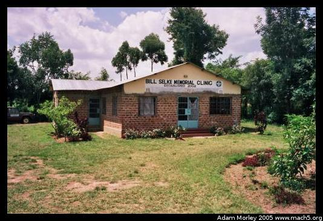

The farm is the Lubanga family homestead, and also the location of ICODEI. Many of these photos don't have people in them --- they were mostly taken on weekends or when school was not in session. For the people, go to the people page.
The hut I lived in while in Kenya. You can see Stallone washing clothes on the right.
The house, and laundry in the foreground, Brooke (a volunteer) in the foreground. There is a fair amount of downtime while volunteering with ICODEI, so we often spend time reading in the wonderful Kenyan weather.
The boar-hole (Kenyan for man-made well) where the family gets their water. This also serves as a place to obtain water for the school that ICODEI runs.
A device designed to purify water by creating chlorine gas from salt using only a battery. Interesting idea, but somewhat complicated to use. Maurice sometimes uses it to purify the water for the school --- when he has a battery.
Rainwater catchment (right), built by a volunteer, along with the outdoor kitchen and chicken coop on the left.
The outdoor kitchen. You can barely see the characteristic three-stone support for holding the pots above the fire. The wall is black not because of shadow, but because of soot from the fire. It amazes me to look at this picture because it is so ... sterile. I remember the kitchen as a very lively place, with chickens running around and food being prepared.
The living room (where the family and the volunteers eat) and the indoor kitchen. Yes --- that is a fridge in the lower right. It works when the generator is not broken and has fuel.
Houses are constructed from mud, with a support of sticks inside the mud. One of the wonderful things about mud houses in the heat of equatorial Africa is how cool mud huts are in the daytime.
The door to the outdoor kitchen (left) and the chicken coop (center), along with a rooster and one of the smart, three-legged chairs from the kitchen.
I was in Kenya just after they harvested maize (corn for us 'mericans), which they dry in the sun. The corn cobs are often used for cooking fires, as they burn readily.
Just next to the farm, the sky opens up.
The local church where Reuben is a reverend.
Inside the church during a fundraiser for a women's conference.
The school buildings of ICODEI. ICODEI runs a school that educates local children. Foreign student teachers can come to teach the students.

The famous green ICODEI bus. This bus transports mobile medical clinics, HIV education program staff, and even the school children pictured here. Because many of the children come from surrounding areas, ICODEI runs a bus-service for the kids to get home. Recently, using donations, ICODEI purchased a newer vehicle so there was less contention for the few vehicles ICODEI has.
Mama Betty peeking over the fence. Kenyans are TALL.
One of the little chicks born while I was in Kenya. Joshua (the youngest boy) spent many evenings chasing the chicks around the kitchen while his sisters helped to cook.
Adam can be reached at adam dot morley at gmail dot com